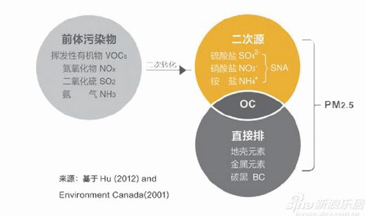
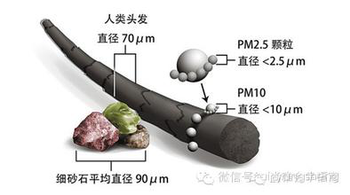
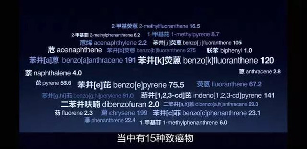
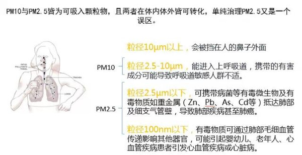

`
雾霾
雾霾与PM2.5




Pm2.5定义
PM，英文全称为particulate matter(颗粒物）。PM2.5是指环境空气中空气动力学当量直径小于或等于2.5微米的颗粒物，也称细颗粒物。
Pm2.5来源
PM2.5自然来源包括：风扬尘土、火山灰、森林火灾、漂浮的海盐、花粉、真菌孢子、细菌。人为排放主要来自燃烧过程，比如化石燃料的燃烧、生物质的燃烧等。
Pm2.5危害
PM2.5主要对呼吸系统和心血管系统造成伤害。PM2.5还会降低能见度、散射和吸收太阳辐射和地面射出的长波辐射，从而影响地、气辐射收支，有时也会影响云的形成。